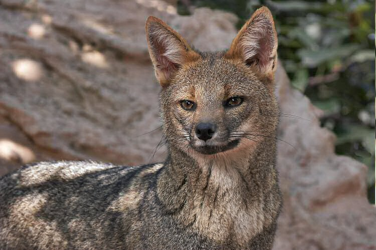
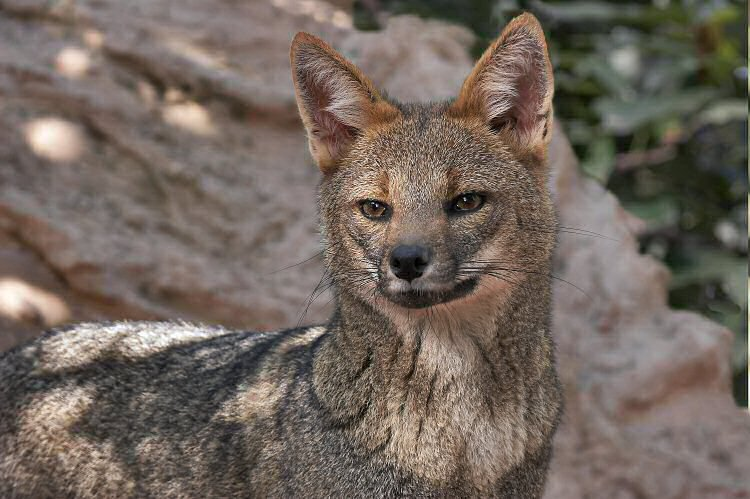

Raposa-Brasileira
Esta imagem abaixo é uma Raposa Brasileira jovem.
Uma pesquisa desenvolvida pela Universidade Federal de Goiás (UFG) aponta que a raposa-do-campo corre risco de extinção devido à ameaças humanas...

Esta imagem abaixo é uma Raposa Brasileira jovem.
Uma pesquisa desenvolvida pela Universidade Federal de Goiás (UFG) aponta que a raposa-do-campo corre risco de extinção devido à ameaças humanas...
Esta imagem abaixo é um filhote de Raposa de Mármore do Ártico.

A raposa-do-ártico, também conhecida por raposa-polar, é uma raposa de pequenas dimensões habitante do Hemisfério Norte...